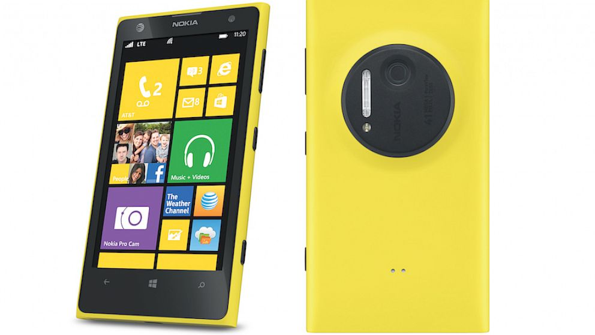
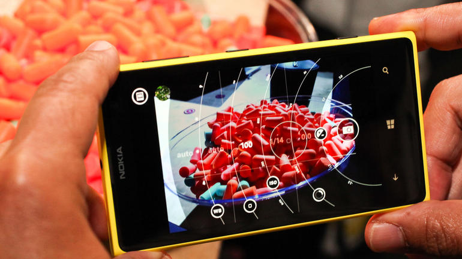

Lumia 1020 - Review
To review the Nokia Lumia 1020 is to review a compact camera that happens to have some phone features tacked onto it. Essentially, you would only buy this thing for its 41MP PureView camera with Xenon flash. If you weren't already a Nokia fan, why buy Windows Phone 8? When we first heard about the 41MP smartphone camera in the Nokia PureView 808, our initial thoughts were, "What a shame to put such a nice camera on a Symbian device." Now that the camera is coupled with a marginally better platform, we can breathe a small sigh of relief.
Design
If you're familiar with the Lumia line of phones, the 1020 shouldn't look that foreign to you. Its curvature and overall shape are reminiscent of the Lumia 920, and the smaller Lumia 820. On the face of the device, you'll find a 4.5-inch 1280 x 720 touchscreen display. The left edge of the device, if you're facing the screen, is clean and free of any buttons or ports. The right side has a volume rocker, power/standby button and a dedicated camera button. At the base of the device you'll find the micro-USB charging port and speaker/microphone. Up top, there is a SIM card tray, 3.5mm headset jack and another microphone for noise cancellation. The back of the device is perhaps the most noticeable, with its large camera module, Xenon flash, LED light and camera lens. It protrudes enough from the device that it never lays flat on its back. Even without the bulky camera, it's a substantial device as far as modern smartphones go. It's not the slimmest or lightest by any means, but it is somehow slightly slimmer and lighter than the Lumia 920. To give you an idea of its dimensions, this Lumia phone is 130.4mm tall, 71.4mm wide and 10.4mm thick and weighs 158 grams. As you can see, it's pretty wide and bloated by today's smartphone standards. Despite its size and weight, you eventually get used to maneuvering your way around the device. It's the camera that makes it tricky to hold. Do you keep your fingers around it, or grip the phone right over the camera? Decisions, decisions. Our review model came in matte black, and it's slightly more slippery than its glossy predecessors. The Lumia 1020 also comes in yellow and white.
Interface and performance
Windows Phone 8 resides inside the Nokia Lumia 1020, and if you've ever used Windows Phone before, it will be incredibly familiar to you. This version of Windows Phone 8 is called Amber, available only to Nokia devices, and it's the latest version of the Microsoft platform. It adds a few nifty new features to the software, but it's not a major overhaul of the platform or anything. You can do new things with the Amber update like double tap the display to turn it on, or flip your phone over to silence it. And if you love customizing your device, there are a handful of new wallpapers added. Otherwise, it's just plain old Windows Phone 8. The live tile system works pretty nicely to give you app updates and any other relevant info you might want to see. The tiles are also customizable in size, so you can make them large or small and arrange them into clusters when you shrink them down. If you swipe to the right from the main screen, you'll see a list of all your apps, including the settings. It's a mostly intuitive platform, but what it's seriously lacking is third-party app support. Most of the big-name apps are on Windows Phone 8, like Facebook, Twitter, CNN, Foursquare and more. But it's also missing incredibly popular apps like Instagram and Vine. This lack of app support is what usually turns people off from adopting the Windows Phone platform. Another sorely missing feature is a centralized notification system. With iOS and Android, you can see all your notifications and updates in a drop-down pane, whereas Windows Phone 8 leaves you guessing with the live tile system. If you get a notification for an app that isn't immediately within view of the display, you have to scroll around just to make sure you haven't missed anything. In terms of everyday performance, I experienced no lag or hiccups at all. Well, other than the camera, but we're going to cover that issue. Scrolling through the home page or within apps is smooth, unlike the Android experience on some handsets. The apps and tiles have cool animations, too, when you're opening or closing them or watching your notifications.
Camera
Now, just because the Lumia 1020 has a 41MP camera, it doesn't mean you're going to be shooting 41MP photos all the time. By default, you're storing 5MP oversampled photos, and I'll explain what that means later. If you set the aspect ratio to 16:9, you'll be taking 34MP photos. Change that to 4:3 and you're taking 38MP photos. The 5MP images are the ones you can share on Twitter, Facebook or via e-mail, just as you would on any other smartphone. The big photos (34MP and 38MP) have to be transferred to a computer if you want to edit, print or share them. The file size would be too large to share or transfer over AT&T's network, and would it would kill your data plan limits in no time. Because of the massive resolution of the photos, you can crop them down dramatically without suffering from too much loss of quality. Alternatively, you get up to 3x lossless zoom while shooting photos. That means you can zoom on your phone like you would on other smartphones, but image quality and details won't degrade, and the end result would still be a 5MP image.
We liked
The camera is the obvious winner here. While 41MP seems like overkill for a smartphone, it does have its benefits. Images are sharper at larger sizes, and the 5MP photos are more crisp than what you'd normally find on any other 5MP or even 8MP smartphone camera. Lossless zoom is also nice to have, coupled with the full resolution photo of the entire scene that's stored along with the zoomed-in photo. To top it off, battery life wasn't bad on the Lumia 1020, so that gives us a little confidence when leaving home without a charger or battery pack.
We disliked
Unfortunately, Windows Phone 8 still has a way to go in terms of competing with Android and iOS. Aside from a lack of great apps, the platform desperately needs a better notification system. It's easy to miss e-mails, messages or app notifications if the tiles aren't in plain sight. Because of these things, the highly advanced camera just doesn't seem all that appealing. It would be like putting a Ferrari engine in a 1998 Toyota Corolla. We would probably give it better consideration if it didn't cost so much, either. $299 is steep for what you're getting with this device.
Verdict
The incredible camera on this phone would benefit from apps that are found on iOS and Android, but missing on Windows Phone 8. Apps like Instagram, Snapseed and Vine would be terrific additions to Windows Phone 8, and it would really help this camera shine. But with the lack or slow development of those types of apps, there is more incentive to go with Android or iOS. We would recommend this phone for those who don't spend too much time in apps, and find themselves messaging and e-mailing and browsing the web more than playing around in apps. In terms of the camera, we can't say this will replace your point-and-shoot or compact camera. However, if you're looking for incredible smartphone camera photos and the flexibility of huge image files while making a few concessions by switching to Windows Phone 8, we might be able to recommend this phone for you. Except it's $299 on contract and that's just a tough price point to justify for the Lumia 1020.